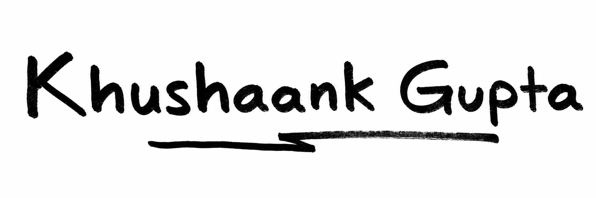

Expression before metrics
Write because the thought matters, not because it has been optimized for a feed.

Knotes
Knotes is a free expression platform for sharing what you are thinking, noticing, questioning, or building. The goal is simple: make writing feel human again.
Most platforms reward performance. Knotes is being shaped around a quieter idea: people should have room to write honestly without turning every thought into content strategy.
The product is early and evolving. The focus is on lightweight publishing, readable profiles, and a culture that makes thoughtful expression feel natural.
Write because the thought matters, not because it has been optimized for a feed.
Profiles and posts should be clear, fast, and easy to read on any screen.
The product should get out of the way between a thought and publishing it.
The writing should feel like people thinking out loud, not dashboards talking.